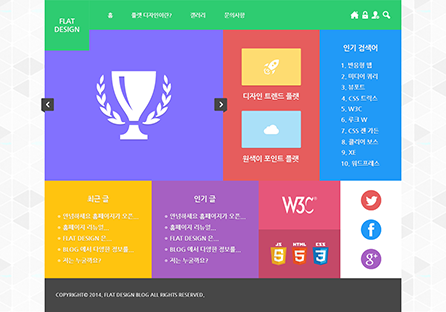

flat
design
홈
하위 메뉴 토글 버튼
플랫 디자인이란?
하위 메뉴 토글 버튼
갤러리
하위 메뉴 토글 버튼
문의 사항
하위 메뉴 토글 버튼
전체 메뉴 토글 버튼
Introduce
Home
Introduce

플랫 디자인
...텍스트 생략...
텍스트를 이용하는 방법
...텍스트 생략...
그림을 이용하는 방법
...텍스트 생략...
아이콘을 이용하는 방법
...텍스트 생략...
플랫 디자인의 미래
...텍스트 생략...
...텍스트 생략...